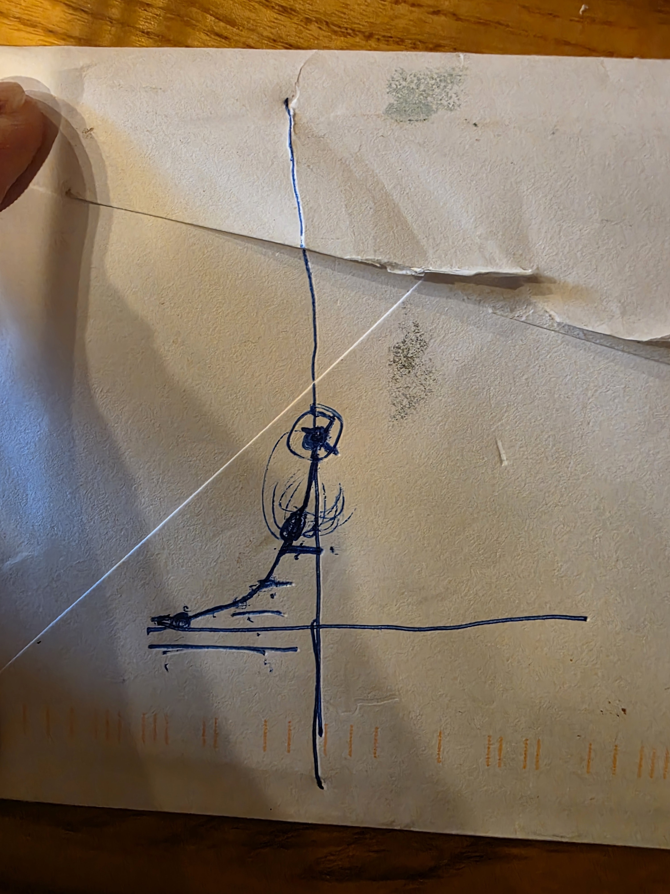
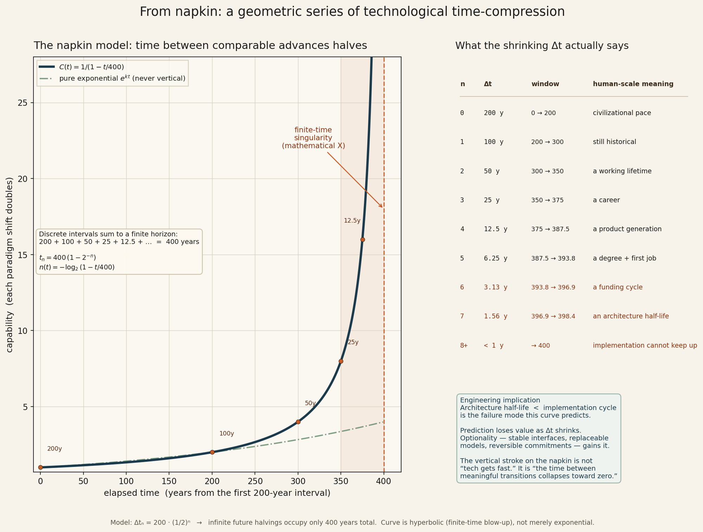
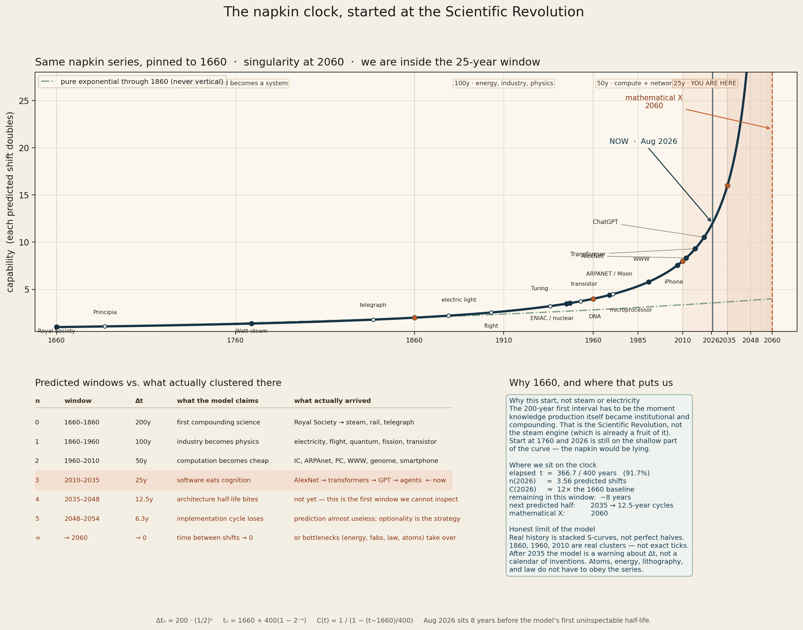

Field note. August 2026. This started as a sketch on the back of a torn envelope, drawn at a kitchen table mid-conversation with my mother, about how the time between major technological advances keeps shrinking, why the world's institutions adopt slower than the frontier moves, and where a line like that ends up. Small talk, really. What follows is what the sketch turned out to contain.
The envelope

Before the sketch, a disclosure about who's holding the pen. I'm not an economist, a forecaster, or an AI researcher. I spent fifteen years building and commissioning industrial infrastructure, launch pads, federal facilities, hyperscale data centers, custom automation for all of them. Now I build AI infrastructure and sovereign AI systems, and consult on both. I've watched one side of this story from inside the machine rooms and I'm building the other side with my own hands, but what follows is still just a practitioner connecting dots and doing arithmetic in public. Judge it by the arithmetic.
I was trying to explain something to her: that the pace of technology isn't just fast, and shouldn't be ignored, the gaps between the big shifts keep shrinking. So I scratched out a quick graph with a line. Flat for a long time, then climbing, then climbing harder, then doing something near the right edge that most people see and ignore, because they don't fully understand it.
Under it, without thinking very hard, I marked approximate intervals: 200 years. Then 100. Then 50. 25. 12.5. Each meaningful revolution or transition arriving in about half the time of the one before…
That's a freehand sketch of a geometric series:
Δtₙ = 200 · (½)ⁿ
And here's the part that stopped me when I looked at it later. If each interval halves, the total time contained in infinitely many future intervals is not infinite. It's:
200 + 100 + 50 + 25 + 12.5 + … = 400 years.
(If you'd rather have the closed form than trust the dots: a geometric series sums to S = a / (1 − r), so S = 200 / (1 − ½) = 400.)
Every halving that will ever happen fits inside four centuries. The time between meaningful transitions doesn't just shrink, it collapses toward zero at a finite point on the calendar. Mathematicians call this a finite-time singularity.
This is not the curve you've seen before
Everyone has seen the "technology is exponential" chart. This isn't that chart, and the difference matters.
An exponential, e^{kt}, grows absurdly fast, but it is never vertical. At any finite moment it has a finite slope. You can always, in principle, catch up to an exponential.
The envelope's curve is a different animal:
C(t) = 1 / (1 − t/400)
That's a hyperbola. As t approaches 400 from below, C(t) grows without bound; at t = 400 the expression is undefined. There is a wall on the x-axis. An ordinary exponential can also outrun a fixed adaptation process, but it does not produce a finite calendar point at which the modeled interval collapses to zero. The exponential brags about its growth rate; this curve has a finite-time blow-up the exponential doesn't have.

Why does the shape matter? Because the two curves tell different stories about us. Under time-compression, there is a horizon past which no fixed adaptation speed is sufficient, not because the technology became magic, but because the interval between shifts dropped below the time a given human process needs to respond to one.
I started calling that the Comprehension Horizon.
Pinning it to the calendar, carefully
A model like this is a toy until you anchor it, and an anchor is where you can fool yourself. So let me show the pinned version and then be honest about its epistemics.
If the first 200-year interval begins around 1660, the Scientific Revolution, the founding of the Royal Society, the moment knowledge production itself became institutional and compounding, the windows land like this:
| n | Window | Δt | What actually clustered there |
|---|---|---|---|
| 0 | 1660–1860 | 200y | method → steam, rail, telegraph |
| 1 | 1860–1960 | 100y | electricity, flight, quantum, fission, the transistor |
| 2 | 1960–2010 | 50y | integrated circuits, networks, PCs, the web, the genome, the smartphone |
| 3 | 2010–2035 | 25y | AlexNet → transformers → GPT → agents ← you are here |
| 4 | 2035–2048 | 12.5y | the first window we cannot inspect from here |
| 5 | 2048–2054 | 6.3y | implementation cycles start losing on paper |
| ∞ | → 2060 | → 0 | or atoms, energy, and law refuse the series |

On this clock, August 2026 sits 91.7% of the way to the horizon, about 367 of 400 years elapsed, inside the fourth window, roughly eight years before the model's first genuinely uninspectable interval. Kurzweil's famous 2045, for what it's worth, lands inside that 12.5-year window, not at the wall. The wall itself is 2060.
Now the honesty: the calendar is the weakest part of this essay, and I want you to treat it that way. Any halving series pinned to history is a curve fit, and the fitter chooses the events. Start the clock at Gutenberg instead of the Royal Society and the wall moves. Real history is stacked S-curves, not clean halves; 1860, 1960, and 2010 are genuine clusters, but they are clusters, not ticks. The pinned model is an illustration of a shape, it is not the claim.
The claim is what comes next, and it doesn't need the envelope at all.
The part you can verify without believing any of the above
Forget 1660. Forget 2060. Look only at the layer of technology I work in, over the last fourteen years:
2012, AlexNet. 2017, the transformer. 2020, GPT-3. 2022, ChatGPT. 2024–2026, reasoning models and agent systems.
That is not a 25-year cadence. It's not even a 5-year cadence anymore. For anyone actually shipping systems on this stack, the interval between changes that force architectural rework is currently 12 to 18 months, and the direction of travel is down. That 12-to-18-month figure is practitioner language from the shipping layer. It is not the same object as the curated capability steps used in the measurement file; those are documented there.
I've since started measuring this properly, real institutional processes scored against real frontier cadence, with the methods written down where they can be attacked. That measurement program, Stale State, publishes separately. Two early results frame the stakes better than any curve. A typical FDA review of an AI medical device consumes less than half of one frontier generation, that loop is keeping pace, at least on the clock. A typical grid interconnection wait, the queue a power plant sits in before it may connect, the loop that gates the energy this whole acceleration runs on, now spans more than three frontier generations on the curated clock under a mid-year convention, nearly four, and more than two on the most conservative clock I could construct. And it's lengthening: three years in 2015, over five today. The distances are shrinking. Some of the systems standing under them are not. One of the load-bearing ones is getting slower. The split is observable. The mismatch is already compounding in at least that load-bearing system.

This gives us two clocks running at once, and the difference between them explains most of the public confusion about AI:
- The paradigm clock, the one civilization feels. On the envelope, we're in a 25-year window; society has processed maybe the first third of it. This is the clock on which reasonable people still debate whether AI "matters."
- The stack clock, the one builders live on. It has already fallen through several extra halvings inside the current paradigm window. This is the clock on which your model choice from last spring is already legacy.
These two groups aren't disagreeing. They aren't standing on the same clock. The public conversation is asking whether generation N is real while the frontier ships N+3, and both sides experience the other as delusional.
I want to be precise about why I trust this gap: I've seen it from more angles than most people get. From inside the professional corporate world and from the trades. On government projects. Assisting small businesses. Florida electricians and roofers among them, some of the most honestly tech-averse people you'll ever build a website for, and alongside enthusiasts who ship with frontier models before breakfast. Across incomes, from union paychecks to executive offers to bootstrap months. Across countries, continents, languages, and faiths, the gap reads the same in English and in Spanish, in boardrooms and in job trailers. And now from building architecture whose entire job is to withstand the inrush of changing system components arriving at an increasingly rapid rate. Same gap at every altitude and every latitude, only the vocabulary changes.
Formalize that gap and you get the variable that I think matters more than capability itself. Call capability C(t) and society's integrated understanding of it S(t). There has always been a lag. C(t) > S(t) is the normal condition of technology. The dangerous condition is:
dC/dt > dS/dt, sustained.
Then the gap doesn't just persist - the gap itself grows. Education, regulation, procurement, corporate strategy, professional training, even language, some increasingly important mechanisms humans use to collectively metabolize change have cycle times longer than the interval they are trying to metabolize. Not all of them. A high-stakes review loop in the measurement file is still closing inside one generation. The load-bearing exception is the point. We don't even keep stable words long enough: "chatbot" broke, "copilot" broke, "agent" currently means fifteen things. Our vocabulary has an architecture half-life too.
The kitchen-table conversation this essay came from was already circling this variable before either of us named it: the widening separation between the people building at the frontier and the masses, and the regulated bodies, deciding what to adopt, while the interval between major advances keeps shrinking underneath both. The sketch just gave that gap a shape. That's what the Comprehension Horizon actually names: not the year technology becomes infinite, but the point at which the bridge-building stops keeping up.
The engineering rule
Here is the sentence this whole essay exists to deliver:
You do not need the singularity to be real for the engineering rule to change.
Whether or not the series runs to 2060, one crossover is already behind us on the stack layer:
Architecture half-life < implementation cycle.
When the useful life of a technical decision is shorter than the time it takes an organization to implement that decision, prediction-based engineering, pick the winner, standardize, amortize, stops being a strategy and becomes a liability with paperwork. The measurement program gives this a number: when more than one frontier generation elapses during a single implementation, what you're running is no longer a project. It's a continuous migration program wearing a project-management costume. If procurement takes longer than model relevance; if training takes longer than workflow stability; if governance takes longer than system mutation, then the regime has already changed, whatever we decide to call it.
The future doesn't need to become magical. It only needs to become faster than commitment.
And under that condition, the winning doctrine inverts. You stop optimizing for the best prediction and start optimizing for the cheapest correction:
- Stable interfaces over stable implementations, the contract outlives every engine behind it.
- Replaceable models, weights are consumables, swapped on benchmarks, never load-bearing identity.
- Owned state, your data, your memory, your history, on your disk; the one asset that survives every migration.
- Reversible commitments, every vendor, every dependency, priced by the cost of leaving it.
- Local sovereignty where it matters, the layers you cannot afford to have revoked, you run yourself.
That list isn't ideology. It's a survival posture under time compression. And it carries a quiet bet about the other side: I'm building for the foreseeable future, which now means until X, that's what "foreseeable" has come to mean. Past that point, the hope is simple and a little strange: that architecture built this way, interfaces stable, state owned, everything replaceable, just continues to tend itself. I suppose that's what you plant when you can't see past the horizon. Not a prediction. A system that doesn't need one.
Receipts
I don't hold this doctrine as theory. I run it, on my own hardware, and it gets tested at ground truth.
This year I benchmark-swapped the core reasoning model of my own AI stack, measured trials, new champion, old model retired to a fallback seat. The interfaces didn't move; the system's identity lives in its contracts and its owned memory, not in any particular set of weights. The deploy rail has rollback that's been fired live, not just designed. The data plane, every conversation, every document, every decision, lives on disks I own, in boring portable formats, with backups that are restore-verified, not assumed.
And recently the doctrine got a live-fire exercise I didn't schedule: a cloud database vendor's billing turbulence took my production database hostage, dashboard chaos, broken connectivity, a $29/month ransom disguised as an IPv4 add-on. Because that database was vanilla Postgres with nothing vendor-specific woven through it, the entire escape, verified backup, restore test, migration plan, took one afternoon. I wrote that incident up separately as The IPv4 Tax, and I'd summarize its lesson in one line: the vendor went from holding my business to renting me an endpoint the moment a verified copy existed on my own disk.
That's what optionality looks like in practice. Not a prediction about 2060, a posture for Tuesday.
What would prove this wrong
A thesis that can't name its own kill conditions is a horoscope. Here are mine:
- Frontier capability-generation intervals stabilize at multi-year lengths. If the time between comparable capability steps lengthens and stays long, the stack clock is decelerating and the live condition is ending. A single model remaining branded "state of the art" is not the test; the interval between generations is.
- Institutional cycles catch up. If enterprise adoption, procurement, and regulation begin closing the gap with capability cadence, dS/dt rising to meet dC/dt, then consensus lag is shrinking and the horizon recedes.
- Ordinary architectures stop needing migration. If a typical implementation can ride multiple capability generations without material re-evaluation or migration pressure, not because it was designed as an optionality stack, but because the generations slowed, the halving pattern is breaking at the layer where it currently bites hardest. An optionality architecture surviving by design is not a kill. That is the doctrine working.
I would genuinely welcome any of these. None of them is happening as I write, and the measurement program re-scores its loops as each year's data lands, so this essay's obituary, if it earns one, will be published by its own instrument.
What X actually is
The envelope's wall at 2060 is the model talking, and models are toys. But the original blue-pen line did something the equation doesn't capture: it kept going past the vertical. Mathematically improper. Philosophically, maybe the most important stroke on the envelope, because whatever reality does at that point, it won't stop simply because our framework stopped being useful.
Somewhere in the long conversations that formalized this sketch, it picked up an unofficial subtitle: blue pen says fuck your x-axis. I've kept it, because it remains the truest one-line summary of what the drawing does.
So X is probably not a cinematic day when everyone wakes up and agrees the singularity arrived. The likelier version is quieter and stranger: we pass successive thresholds while still arguing about whether the previous threshold was real, and X becomes visible only in the rearview mirror, the point past which our explanatory frameworks were, in retrospect, no longer describing the world that contained them.
The exact year is almost beside the point. The split between the clocks is already observable; the mismatch is already compounding in at least one load-bearing system; the engineering rule has already flipped for anyone building at the frontier. Large parts of civilization are measuring this moment with the wrong ruler, and the envelope's real message was never the wall at the end of the axis.
It was the shrinking distances underneath the line.
(At the kitchen table we called X the finish line, then talked our way out of it: it isn't the end of the curve. The line keeps going past the vertical, it's just that on the other side, things change in ways that are meaningful, material, and from here, mostly incomprehensible. That was supposed to be small talk. This essay is what it turned into.)
Shane Thomas Strough spent 15+ years building and commissioning the physical infrastructure the future runs on. DoD and federal facilities, aerospace launch infrastructure, hyperscale data centers, and now builds sovereign AI systems and the infrastructure beneath them. He writes field notes from real incidents at shanestrough.com.
The numbers behind the two loops in this essay, definitions, sources, worked integrals, and the three-clock robustness cut, are in the companion report, Stale State.